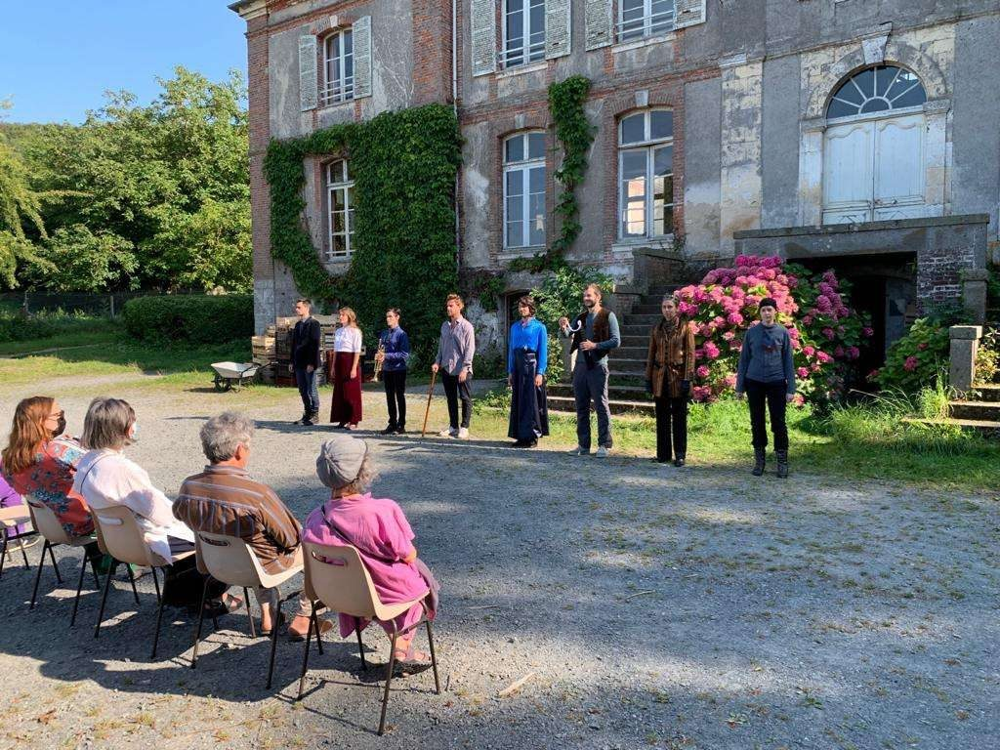
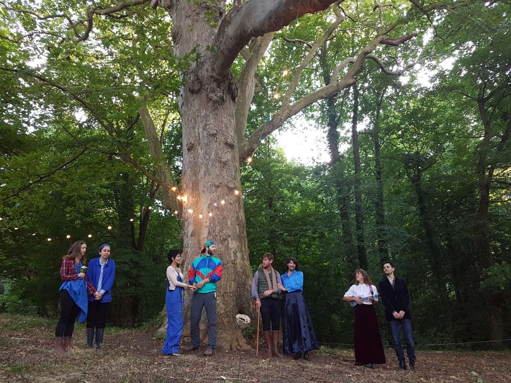
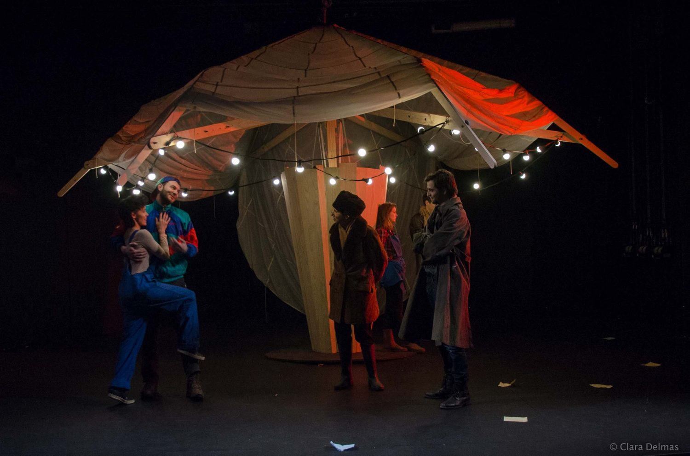
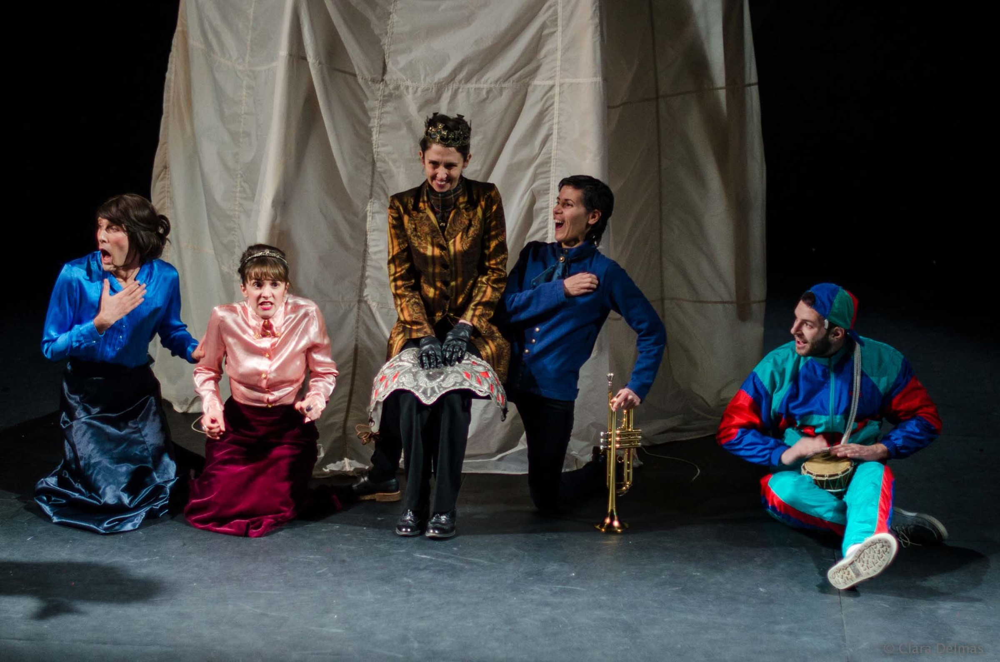
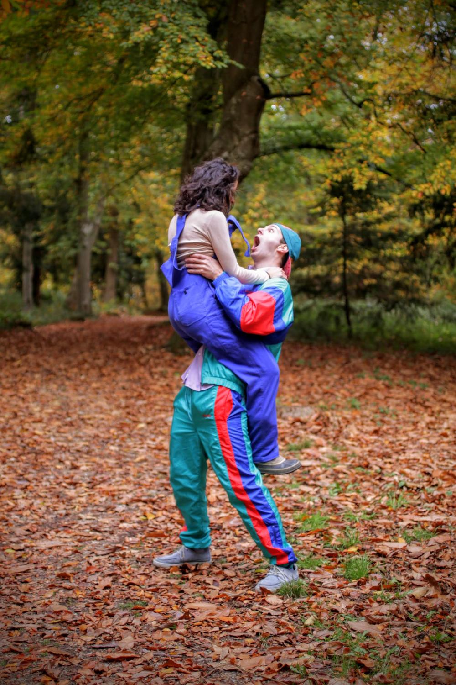
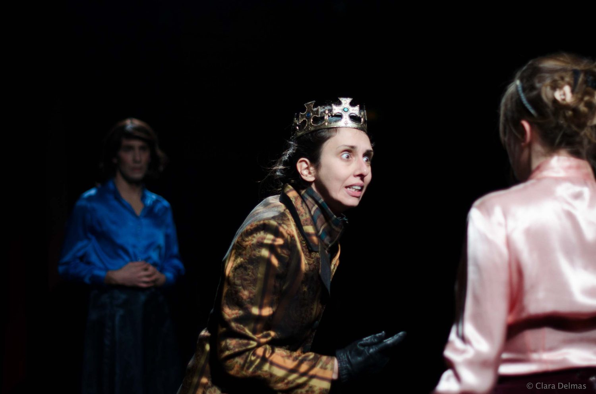
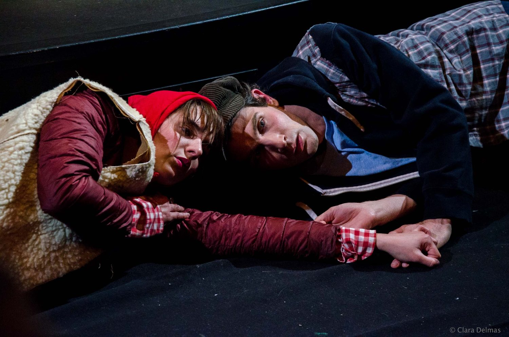

2022
As You Like It
Rôle Touchstone
Compagnie Bloomsbury — Nicolas Gaspar
Bannie de la cour, Rosalind s’enfuit dans la forêt des Ardennes. Déguisée en berger sous le nom de Ganymède, elle est accompagnée de son bouffon Touchstone et de sa cousine Celia. Elle y retrouvera d'autre membres de la cour exilés, les bergers du pays et le jeune homme dont elle est tombée amoureuse.
Photographies








Photographies : Clara Delmas
Distribution
- Alexis Debieuvre*
- Noémie Fourdan
- Nicolas Gaspar
- Nanou Harry
- Clotilde Maurin
- Laurent Prache*
- Bastien Spiteri
- Laurène Thomas
- Adrien Vada
* en alternance